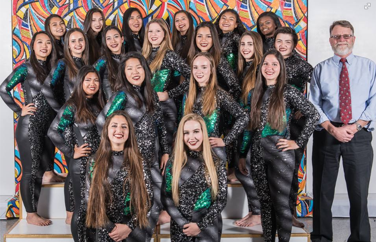

Me performing "The Forest" my freshman year in Fresno, CA for the Western Band Association (WBA) Championships.
Hello! My name is Stella Lin. I'm currently a junior at Ayala High School. I am also a member of Ayala's award winning marching band and colorguard, and was a member of the varsity winterguard this past season.
A few fun facts about me are... I'm a Libra, I'm Taiwanese, I love BTS, and I have two cats: Sushi and Miluku.
"In the end we only regret the chances we didn't take" - Lewis Carroll
The lovely ladies that I am fortunate enough to call my family ❤